手順書の番号の形（大見出しは Ⅰ．Ⅱ．…、小見出しは ⅰ．ⅱ．…）をボタンに添えて、どちらを押せばよいか分かるようにします。番号は紙面と同じ明朝体です。
道具の幅（86px）は、どの案でも今のままです。案によって、道具の高さが少し変わります。
絵の中に小さく「I」「i」があるだけ。
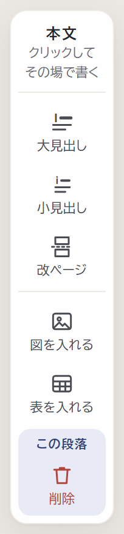
番号が続くこと（Ⅰ．Ⅱ．…）まで分かる。道具が少し高くなる（2つで +32px）。
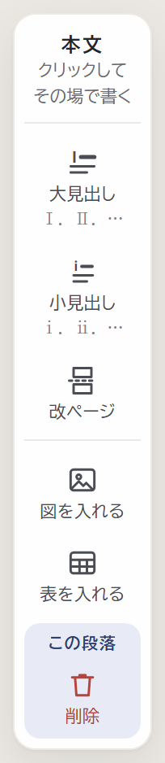
1行のまま「大見出し Ⅰ．」。高さはほぼ同じ（+10px）。
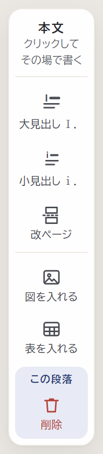
絵を大きな「Ⅰ」「ⅰ」に替える。高さは同じ。英字の I・i にも見える。
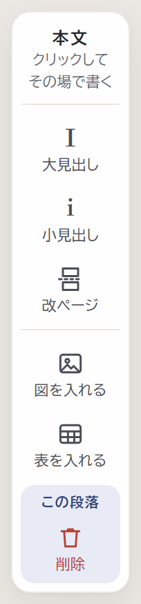
キーボードの上の「追加」を押すと出る段です。パソコンで選んだ案と同じ形にします。
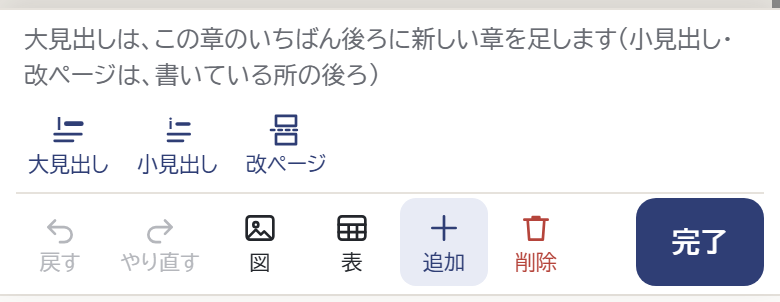
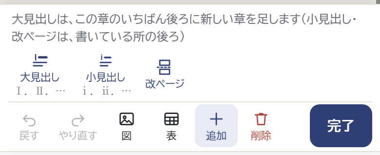
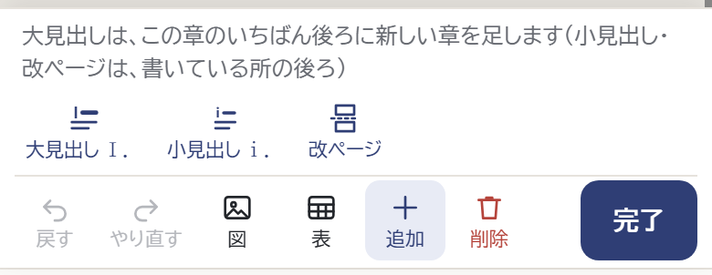
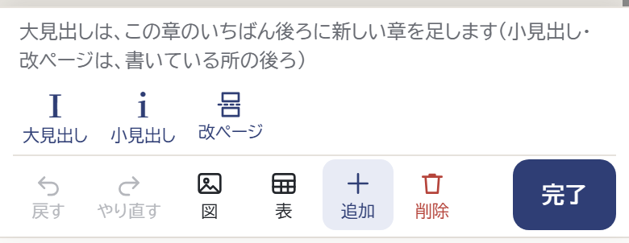
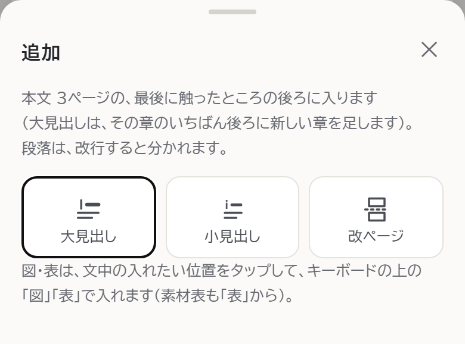
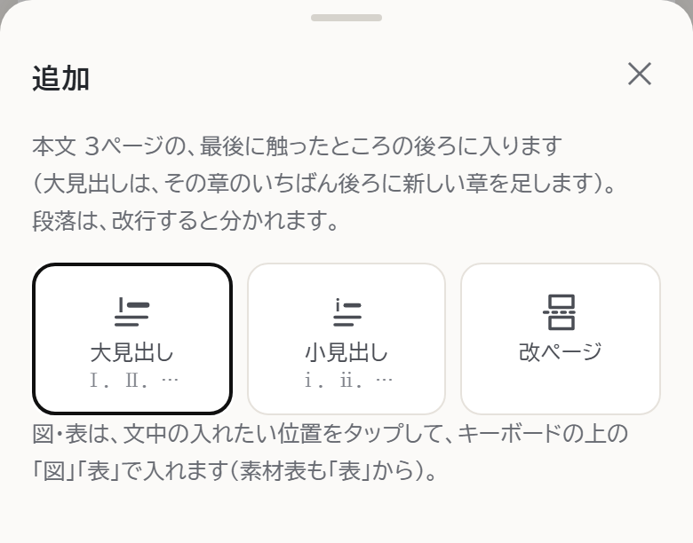
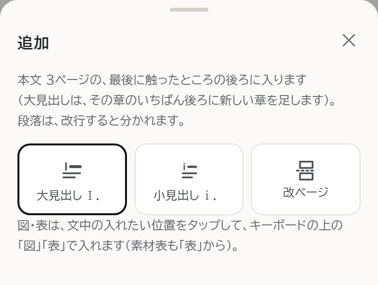
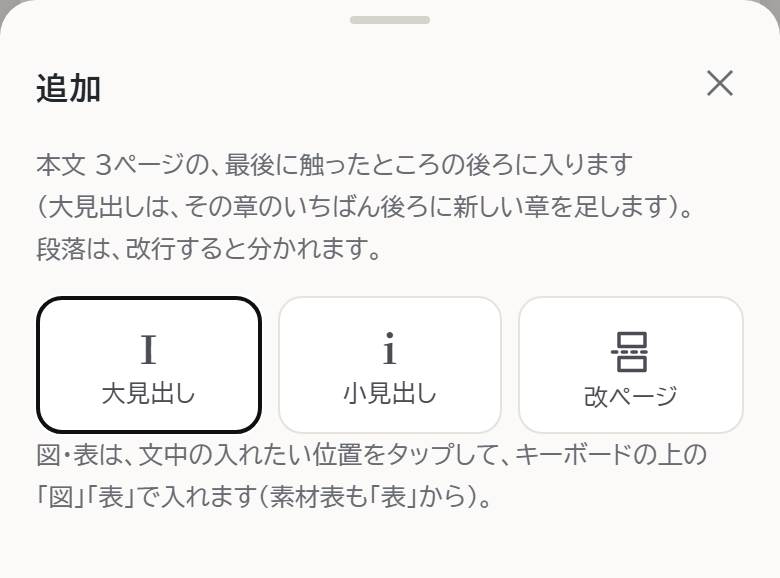
ひな形を作る画面（管理ページ）の左の道具も、選んだ案と同じ形にそろえます。画面の高さが低いパソコン（1280×586 など）では、今も道具の中を上下に動かして使います。